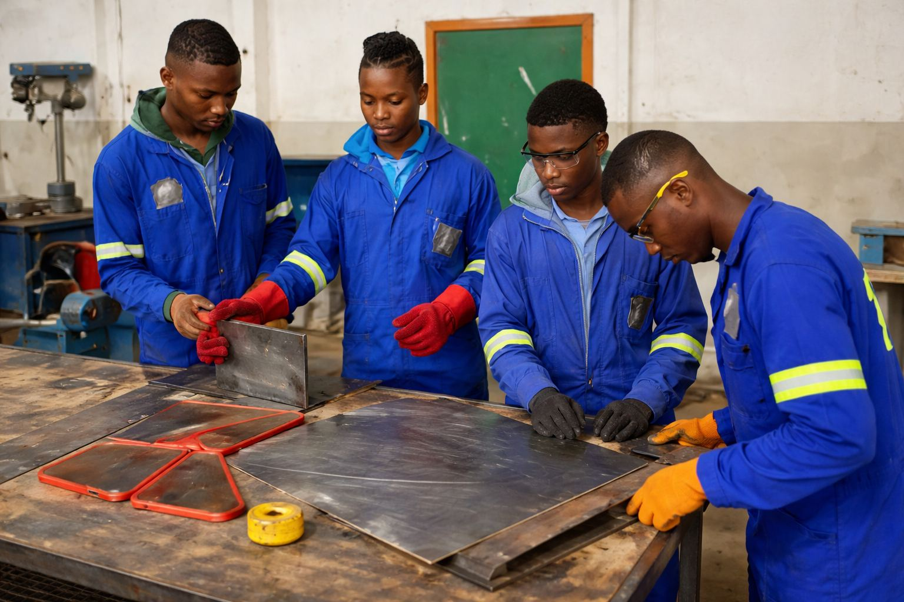
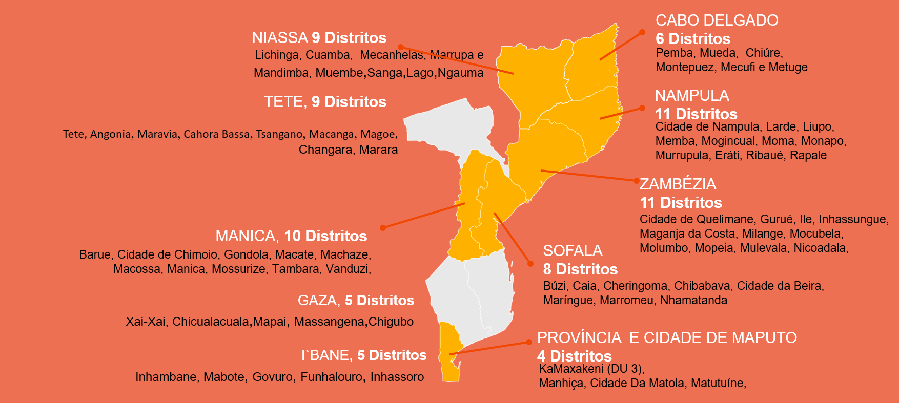

Bolsa formativa
Módulos de formação técnico-profissional ministrados por entidades privadas seleccionadas, com subsídio de apoio ao consumo e subsídio de transporte para quem vive longe do local de formação.

Componente Transformação Económica
Candidate-se a uma Bolsa de Formação do Acredita Emprega.
O programa quer aumentar a produtividade e os rendimentos de jovens moçambicanos à procura de emprego, a trabalhar por conta própria ou no sector informal, nos distritos mais vulneráveis.
Números divulgados publicamente em Setembro de 2026. [FONTE A CONFIRMAR junto do MJD antes da publicação]
Fique atento ao programa
O Acredita Emprega é a designação do Programa de Apoio à Produtividade (PAP), implementado pelo Ministério da Juventude e Desporto através do Instituto Nacional da Juventude. Destina-se a jovens vulneráveis, desempregados, subempregados e trabalhadores por conta própria, sobretudo do sector informal e das zonas rurais e periurbanas.
As mulheres jovens merecem atenção particular: 70% das bolsas são-lhes reservadas e só as mulheres que concluírem o curso técnico podem concorrer à subvenção de 100 000 MT para o seu negócio.
Módulos de formação técnico-profissional ministrados por entidades privadas seleccionadas, com subsídio de apoio ao consumo e subsídio de transporte para quem vive longe do local de formação.
Acompanhamento durante e depois da formação, para transformar competências técnicas em rendimento.
Apoio não reembolsável para mulheres jovens que concluam a formação com avaliação positiva e apresentem um pequeno plano de negócio. É um concurso separado, com critérios a anunciar.
Lista indicativa divulgada no lançamento. A oferta concreta varia por distrito.
Critérios
Ter entre 18 e 35 anos.
Ser moçambicano.
Mínimo 5.ª classe. São aceites os níveis básico, médio, técnico-profissional, universitário ou outros.
Residir num dos distritos abrangidos, comprovado por declaração do bairro ou outro comprovativo de residência.
Estar desempregado, subempregado ou a trabalhar por conta própria no sector informal.
Ter disponibilidade para participar na formação presencial.
Os beneficiários da edição anterior não são elegíveis. Quem se candidatou e não foi seleccionado pode voltar a candidatar-se.
Cobertura
O programa está presente em 78 distritos de dez províncias. Só são elegíveis os candidatos que neles residem.

Como funciona
O processo de candidatura aos Serviços de Auto-Emprego (SAE) do Acredita Emprega segue seis etapas.
Preenchimento do formulário em linha. No fim surge a mensagem «A sua candidatura foi submetida com sucesso» e um SMS envia o número de registo.
Verificação da idade, nacionalidade, escolaridade e residência no distrito.
Publicação das listas de apurados por província e distrito.
Cada jovem é colocado num curso técnico disponível no seu distrito.
Formação presencial, subsídio de consumo e de transporte, e mentoria.
As mulheres que concluírem a formação com avaliação positiva concorrem à subvenção de 100 000 MT.
Calendário 2026
Próximos passos
As candidaturas de 2026 estão fechadas, mas o programa continua. Escolha a sua situação para saber o que vem a seguir.
A subvenção é um concurso separado: ter sido seleccionada para a bolsa não garante a subvenção.
Concorrer e resultados
As candidaturas da edição de 2026 estão encerradas. As listas dos candidatos apurados estão organizadas por província e distrito. Tenha à mão o código de candidatura recebido por SMS. Se o perdeu, recupere-o no portal de candidaturas.
Notícias & Eventos
Jovens moçambicanos dos 18 aos 35 anos, residentes nos distritos abrangidos e com disponibilidade para a formação presencial.
Entrada rápida no mercado de trabalho, alta empregabilidade e auto-emprego, com actualização profissional face às novas tecnologias.
Produtividade, sustentabilidade ambiental e desenvolvimento rural: transferência de tecnologias, gestão de agronegócios e reforço da agricultura familiar.
Informa-te & Expressa-te
Parceiro
Financiamento através do Projecto de Empoderamento e Resiliência das Raparigas na África Oriental (EAGER).
Perguntas frequentes
É o Programa de Apoio à Produtividade (PAP), que visa aumentar a produtividade e os rendimentos de jovens vulneráveis, desempregados, subempregados e trabalhadores por conta própria, sobretudo do sector informal e das zonas rurais e periurbanas, com atenção particular às mulheres.
Jovens moçambicanos entre 18 e 35 anos, com pelo menos a 5.ª classe, residentes num dos distritos abrangidos e em situação de desemprego, subemprego ou trabalho por conta própria no sector informal.
Uma bolsa formativa para módulos técnico-profissionais ministrados por entidades privadas, com subsídio de apoio ao consumo e serviços de apoio, incluindo mentoria. Depois da formação, as mulheres com avaliação positiva podem concorrer a uma subvenção de 100 000 MT.
São 78 distritos em dez províncias. Veja a lista completa e o mapa na secção Distritos.
Não. Só são considerados elegíveis os candidatos residentes nos distritos abrangidos. A residência é verificada através da declaração do bairro ou de outro comprovativo.
Sim. Só são aceites candidatos com idade entre 18 e 35 anos.
Não. Os beneficiários da edição anterior não são elegíveis. Quem se candidatou e não foi seleccionado pode voltar a fazê-lo.
Normalmente significa que muitos jovens estão a submeter ao mesmo tempo. Tente mais tarde ou contacte os pontos focais do seu distrito ou os canais oficiais.
O SMS serve apenas para enviar o número único de registo. Se viu a mensagem de sucesso no ecrã, a candidatura foi recebida. Pode recuperar o código no portal de candidaturas.
Depois de carregar em «Submeter», aparece no topo do ecrã a mensagem «A sua candidatura foi submetida com sucesso».
A divulgação começou a 15 de Junho de 2026. Consulte a lista de apurados.
Não. Esta candidatura dá acesso à bolsa formativa, com subsídio de apoio ao consumo e serviços de apoio. A subvenção é um concurso separado.
Os critérios serão anunciados depois da formação. Só são elegíveis as mulheres que concluírem os módulos de desenvolvimento de competências com avaliação positiva.
A janela de subvenções dá prioridade à inclusão e ao empoderamento económico das mulheres. Estima-se que mais de 80% das mulheres em idade activa trabalhem no sector informal.
A data é comunicada após a selecção. A previsão inicial era 30 de Julho de 2026, podendo ser mais tarde em alguns distritos.
Sim. Está previsto um subsídio de transporte.
Nos distritos abrangidos. Alguns módulos com requisitos técnicos específicos podem decorrer noutro local.
Reclamações
Se for alvo de cobranças ilegais, assédio ou exclusão durante o registo, não se cale. As reclamações são tratadas com confidencialidade, segundo os procedimentos estabelecidos.
Contactos
Para reclamações e denúncias.
@mjdoficial